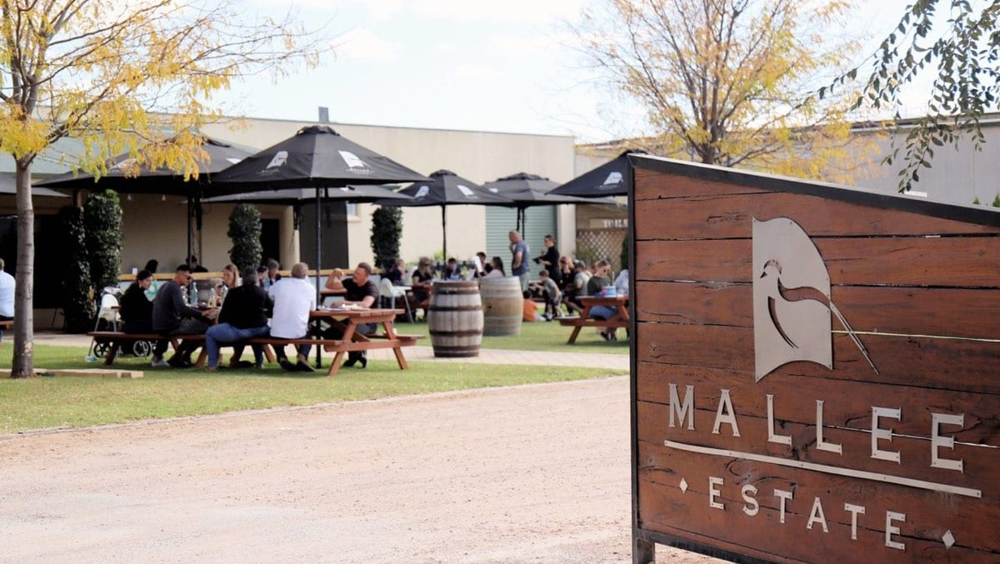
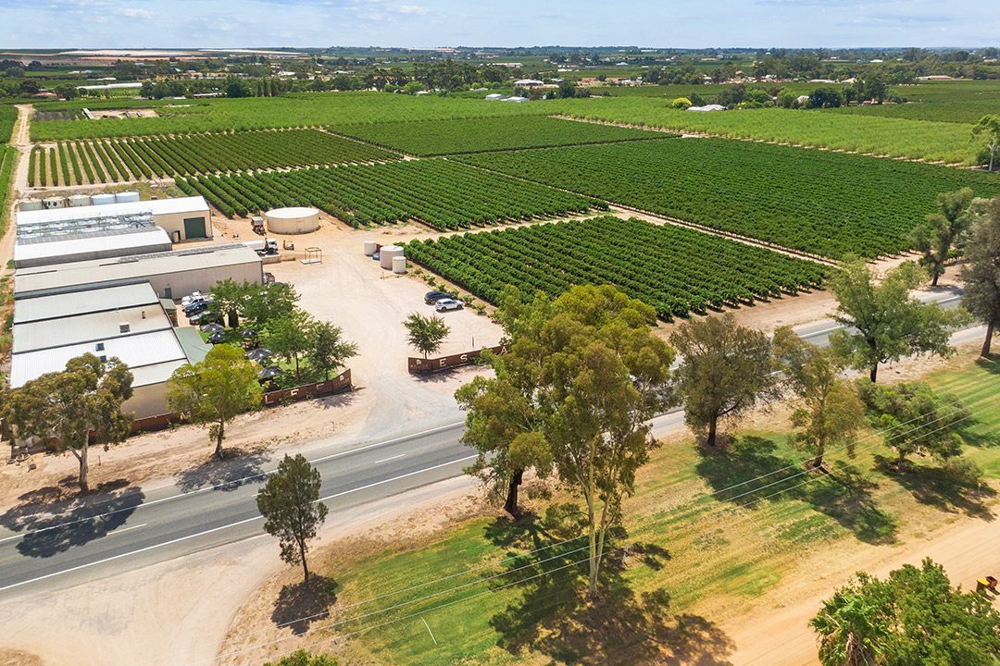
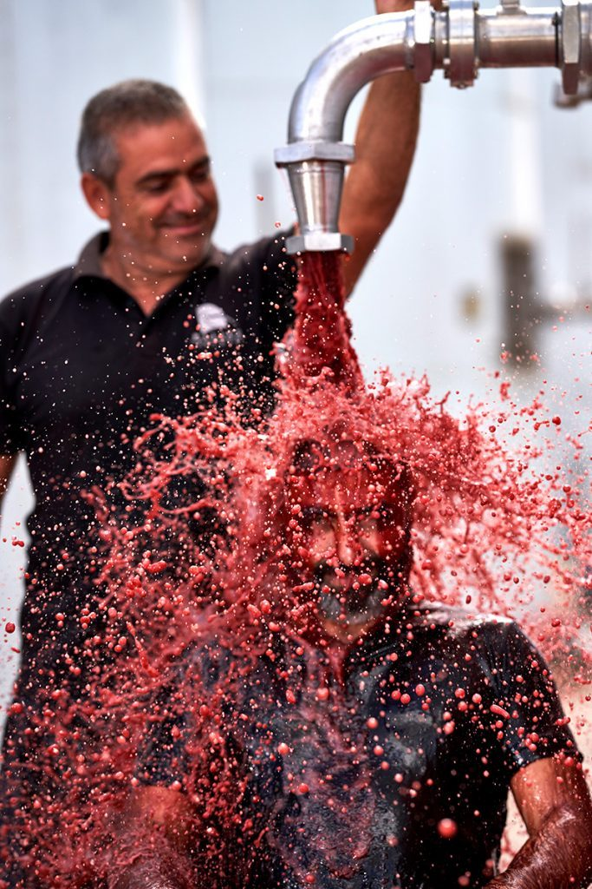
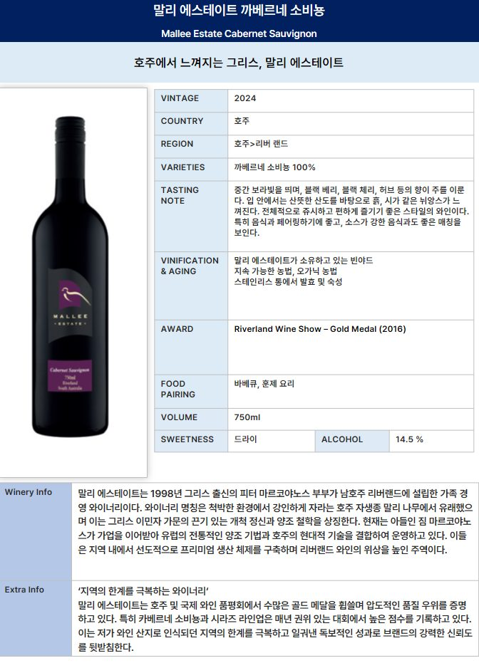
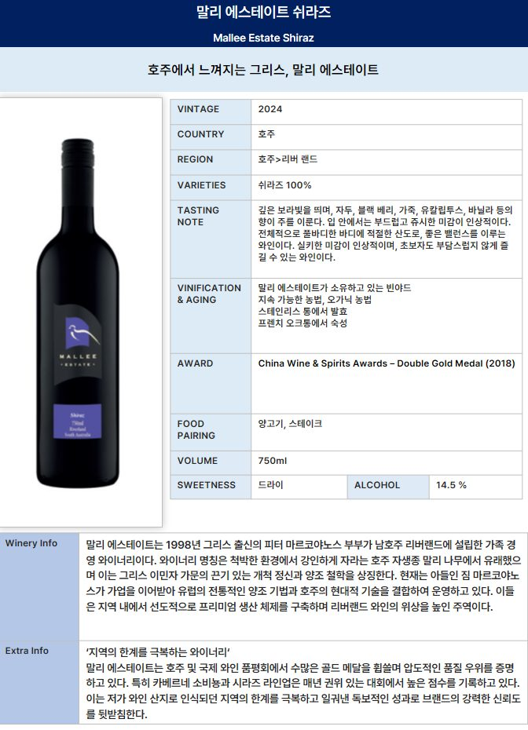
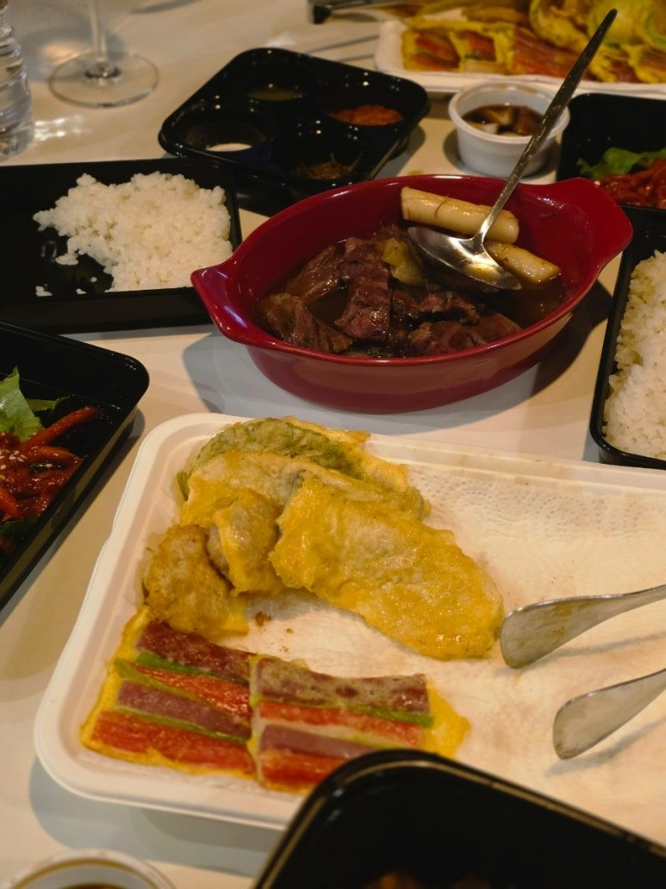
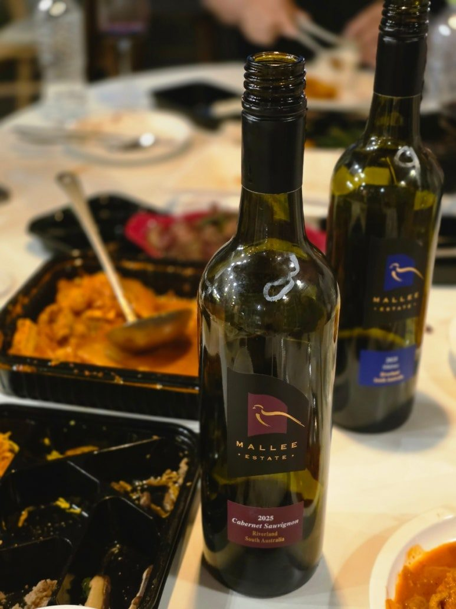
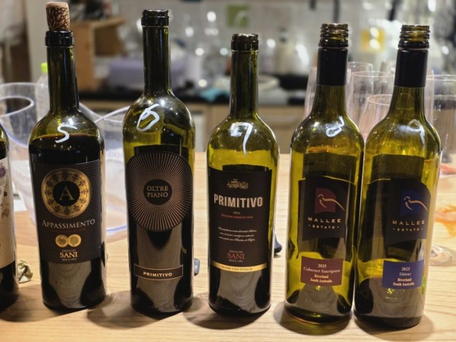

호주 가성비 레드와인 추천
말리 에스테이트 까베르네 소비뇽 & 쉬라즈 비교
호주 레드와인을 떠올리면 가장 먼저 생각나는 품종이 바로 쉬라즈(Shiraz)입니다.
호주 레드와인을 떠올리면 가장 먼저 생각나는 품종이 바로 쉬라즈(Shiraz)입니다.
하지만 호주 와인을 조금 더 다양하게 즐겨보면 쉬라즈 못지않게 까베르네 소비뇽(Cabernet Sauvignon)도 매력적인 품종이라는 걸 알 수 있는데요.
이번에 땡큐와인 시음회에서 함께 비교해본 와인이 바로 말리 에스테이트 까베르네 소비뇽과 말리 에스테이트 쉬라즈입니다.


두 와인은 같은 생산자의 와인이지만 품종에 따라 분위기가 꽤 다릅니다.
특히 이번 시음회에서는 추석 선물세트를 염두에 두고 모듬전, 김치찜, 양념갈비 등 한식과 함께 페어링해봤는데요.
두 와인 모두 음식과 잘 어울렸지만, 참석자들의 반응은 조금 달랐습니다.
말리 에스테이트는 어떤 와인일까?
말리 에스테이트(Mallee Estate)는 호주 사우스 오스트레일리아 리버랜드(Riverland)에 위치한 가족 경영 와이너리입니다.
설립자인 Peter와 Eleni Markeas 가족이 1960년대 호주로 이주해 포도밭을 일구기 시작했고, 1998년부터 본격적으로 와인을 생산해오고 있습니다. 현재도 가족 중심으로 와이너리를 운영하고 있습니다.
특히 리버랜드의 따뜻하고 긴 여름을 바탕으로 잘 익은 과실 풍미와 부드러운 질감의 와인을 만드는 것이 특징입니다.
말리 에스테이트의 기본 레인지에는 쉬라즈와 까베르네 소비뇽을 비롯해 피노 그리지오, 소비뇽 블랑, 샤르도네, 템프라니요 등 다양한 품종이 구성되어 있습니다.
이번에는 그중에서도 까베르네 소비뇽과 쉬라즈를 비교해봤습니다.

① 말리 에스테이트 까베르네 소비뇽
먼저 소개할 와인은 말리 에스테이트 까베르네 소비뇽입니다.
까베르네 소비뇽이라고 하면 보통 탄탄한 타닌과 묵직한 구조감을 떠올리시는 분들이 많죠.
그런데 이번에 마셔본 말리 에스테이트 까베르네 소비뇽은 생각보다 접근성이 좋은 스타일이었습니다.
생산자 공식 테이스팅 노트에서도 바닐라와 스파이스의 향, 그리고 블랙커런트와 허브 계열의 풍미를 특징으로 설명하고 있습니다.
또한 아메리칸 오크에서 12개월 숙성하고, 고운 질감의 타닌과 부드러운 피니시를 갖춘 풀바디 와인으로 소개하고 있습니다.
까베르네 소비뇽의 매력은?
개인적으로 이번 시음에서 재미있었던 부분은 바로 음식과 함께했을 때의 편안함이었습니다.
양념갈비처럼 양념이 진하고 육류의 풍미가 있는 음식과 함께했을 때 까베르네 소비뇽 특유의 구조감이 음식의 맛을 잘 받쳐줍니다.
그렇다고 너무 무겁게 느껴지는 스타일은 아니라서 식사하면서 한 잔씩 편하게 마시기 좋았습니다.
특히 이번 시음회에서는 참석자들의 반응이 상당히 좋았어요.
시음이 끝난 뒤에도
"이 와인 언제 들어와요?"
라는 질문이 계속 나올 정도였습니다. 😊
② 말리 에스테이트 쉬라즈
다음은 호주를 대표하는 품종, 쉬라즈입니다.
호주 와인을 좋아하시는 분이라면 쉬라즈를 빼놓고 이야기하기 어렵죠.
말리 에스테이트 쉬라즈는 까베르네 소비뇽보다 조금 더 부드럽고 풍성한 과실 중심의 매력이 느껴지는 와인입니다.
생산자 공식 노트에서는 바닐라와 초콜릿의 뉘앙스와 함께 풍성한 과실 풍미, 은은한 프렌치 오크, 따뜻하고 부드러운 피니시를 특징으로 설명합니다.
바디감은 미디엄 바디로 소개되고 있어, 풀바디 레드가 부담스러운 분들도 비교적 편하게 접근할 수 있는 스타일입니다.
쉬라즈는 역시 고기와 함께
쉬라즈의 장점은 역시 고기와의 궁합입니다.
이번 시음회에서도 양념갈비나 김치찜처럼 풍미가 진한 음식과 함께 마셔보니 와인의 과실 풍미가 음식과 자연스럽게 어우러졌습니다.
특히 쉬라즈 특유의 풍성한 과실감과 부드러운 질감 덕분에 레드와인을 평소 즐겨 마시지 않는 분들에게도 비교적 쉽게 다가갈 수 있는 스타일이라고 느꼈습니다.


까베르네 소비뇽 vs 쉬라즈, 어떤 게 더 잘 맞을까?
두 와인을 한 자리에서 비교해보면 차이가 좀 더 분명하게 느껴집니다.
말리 에스테이트 까베르네 소비뇽
말리 에스테이트 쉬라즈
품종
Cabernet Sauvignon
Shiraz
스타일
구조감 있고 깔끔한 과실 풍미
풍성하고 부드러운 과실 풍미
주요 특징
블랙커런트, 허브, 바닐라, 스파이스
과실, 바닐라, 초콜릿, 은은한 오크
질감
고운 타닌, 부드러운 피니시
부드러운 질감, 따뜻한 피니시
바디
풀바디
미디엄 바디
추천 음식
양념갈비, 소고기, 구이류
양념갈비, 김치찜, 바비큐
추천 스타일
깔끔하고 균형 잡힌 레드를 좋아한다면
부드럽고 풍성한 레드를 좋아한다면
결국 둘 중 어느 와인이 더 좋은가보다는 어떤 스타일을 좋아하느냐의 차이라고 보는 게 좋습니다.


그런데 이번 시음회에서는 까베르네 소비뇽이 조금 더 인기였어요
사실 호주 레드와인이라고 하면 쉬라즈가 더 유명하잖아요.
그런데 이번 시음회에서는 조금 재미있는 결과가 나왔습니다.
말리 에스테이트 쉬라즈도 반응이 좋았지만, 까베르네 소비뇽에 대한 반응이 특히 좋았어요.
아마도 이번 시음회가 와인만 따로 마시는 자리가 아니라 모듬전, 김치찜, 양념갈비 등 음식과 함께 진행됐기 때문이라고 생각합니다.
음식과 함께 마시다 보니 너무 달거나 과하게 무거운 스타일보다 깔끔하고 목넘김이 편하면서 음식과 자연스럽게 어울리는 레드와인에 손이 더 많이 갔던 것 같아요.
실제로 시음이 끝난 뒤 병을 확인해보니 어떤 와인은 거의 비어 있었고, 어떤 와인은 아직 많이 남아 있었습니다.
굳이 인기투표를 하지 않아도 남은 와인의 양만 보면 어떤 와인이 인기가 좋았는지 알 수 있을 정도였죠. 😂
그리고 그중에서도 눈에 띄었던 와인이 바로 말리 에스테이트 까베르네 소비뇽과 쉬라즈였습니다.

추석 와인 선물세트로도 괜찮은 이유
이번에 이 두 와인을 시음한 가장 큰 이유 중 하나가 바로 추석 와인 선물세트였습니다.
명절 선물용 와인은 혼자 마시는 와인과는 조금 다르게 생각해야 합니다.
받는 분의 취향을 정확히 알기 어려운 경우가 많기 때문에 너무 개성이 강한 와인보다는 식사와 함께 편하게 즐길 수 있고, 여러 사람이 부담 없이 마실 수 있는 와인이 좋은 선택이 될 수 있습니다.
그런 점에서 말리 에스테이트 까베르네 소비뇽과 쉬라즈는 꽤 좋은 후보였습니다.
특히
✔ 2~3만원대 가성비 레드와인을 찾는 분
✔ 거래처 선물용 와인을 찾는 분
✔ 추석 와인 선물세트를 준비하는 분
✔ 양념갈비·구이·한식과 잘 어울리는 레드와인을 찾는 분
✔ 데일리로 편하게 마실 호주 와인을 찾는 분
이라면 한 번쯤 비교해볼 만한 와인입니다.
이 글은 땡큐와인 네이버 블로그에 먼저 올린 글이에요.